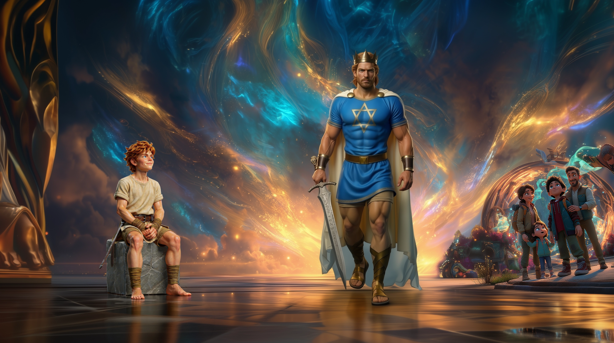

Our Story
YALDY™ – Real Heroes. True Strength.
Premium educational puzzles and stories inspired by biblical heroes. In a world flooded with animated superheroes, we return to the real ones — heroes of heart, faith, and courage.
Our dream was born from the desire to lift children's eyes from the screens and bring back the fascinating stories of the world's best-selling book – the Bible.
We create a new world of inspiration – puzzles, books, and figures that tell true stories, stories that connect generations, past and future, children and parents.
YALDY™ brings to life premium educational puzzles, stories, figures, media, and creative products inspired by the heroes of the Bible — blending art, storytelling, and eternal values for children and families. Our mission is to inspire families around the world through creativity, courage, and faith.
YALDY™ – where true heroes are born.
How It All Began
It all began one evening when my son asked me who was stronger — two of the world's most famous superheroes. I paused for a moment, and then smiled. "Actually," I told him, "King David was stronger than both of them together."
He looked at me in wonder. So I added, "Yes! Maybe they can fly, but did you know that Samson brought down an entire building with his bare hands?"
He stared at me with wide eyes — amazed. And in that moment I realized something powerful: our true heroes, the ones from the Bible, had almost disappeared from the stories children grow up with. Not because they're less impressive, but because no one had told their stories like this — not as distant legends, but as real heroes with heart, strength, and faith.
That night, we decided to bring them back. To show that you don't need a cape or laser eyes to be a hero. All you need is faith, courage, and truth.
And that's how YALDY™ was born — a family dream to inspire children around the world to grow up with real heroes, heroes who don't just save the world — they help you become the best version of yourself.